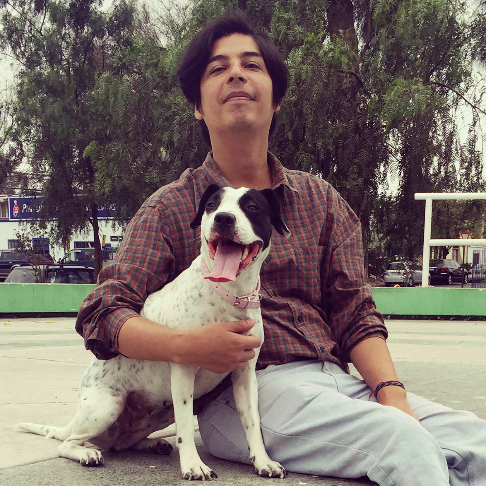

Angello López
Resumen
Doglover, Diseñador de Sonido y Artista Audiovisual. Mi objetivo es dar lo mejor de mí en una carrera gratificante, donde sin miedo a los desafíos
pueda utilizar mis habilidades y conocimiento para el crecimiento organizacional y personal.
Datos Personales
- Nombre: Angello López
- Lugar de Nacimiento: Arica (Chile)
- Fecha de Nacimiento: 17 de octubre de 1983
Formación
Antiguamente la universidad era el único lugar de calidad para aprender a desarrollar tus talentos.
Con eso bastaba. Hoy no es así, en realidad en la actualidad un título universitario es muy útil pero
no determinante a la hora de conseguir un empleo. Esto es un efecto de la era digital.
- Codigo Facilito - Curso de Accesibilidad Web (2023)
- FreeCodeCamp - Responsive Web Design (2023)
- UNA Universidad Nacional de las Artes - Diploma de Extensión Universitaria Teoría de la música y composición (2023)
- UTNBA - Experto Universitario en Diseño de Sonido (2022)
- Universidad Santo Tomas - Emprendimiento Digital con Tecnologías Web (2021)
- Universidad del Mar - Diseño Gráfico (2007)
- Universidad de Tarapaca - Plan Común Ingenieria (2006)
- Instituto Pukara - Usuario Avanzado y Programación (1999)